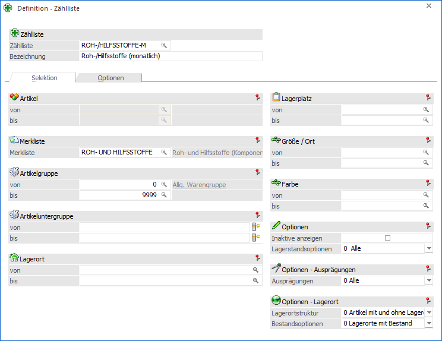
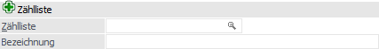
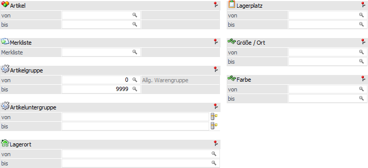
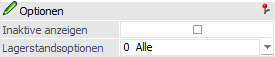
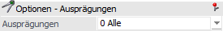
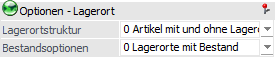

In dem Register "Selektion" wird die grundsätzliche Artikelselektion vorgenommen.
Hinweis
In der Inventur ist die hier definierte Selektion nicht änderbar.
Achtung
Bei Zähllisten mit dem Status "2 - Bearbeitet" oder "3 - Gebucht" können im Register "Selektion" keine Änderungen vorgenommen werden!

Folgende Eingabefelder stehen zur Verfügung:
Zählliste

Ø Zählliste
An dieser Stelle wird die Nummer bzw. das Kürzel der Zählliste hinterlegt. Dieses wird weiterer Folge in der Inventur als Auswahlkriterium angezeigt.
Ø Bezeichnung
Hier kann eine 200stellige Bezeichnung für die Zählliste hinterlegt werden.
Hinweis
Wurden bereits Zählliste definiert, so kann mit Hilfe der Taste F9 eine Kopie einer bestehenden Liste erzeugt werden.
Selektion

Ø Artikel von / bis
An dieser Stelle können die Artikel für die Inventur hinterlegt werden.
Ø Merkliste
Durch Hinterlegung einer Merkliste werden die Artikel der Liste für die Inventur genutzt.
Hinweis
Durch Zuweisung einer Merkliste wird das Selektionsfeld "Artikel von / bis" für eine Eingabe gesperrt.
Ø Artikelgruppe von / bis
In diesen Feldern kann nach den Artikelgruppen eingeschränkt werden, welche in der Inventur berücksichtigt werden sollen.
Ø Artikeluntergruppe von / bis
An dieser Stelle kann nach den Artikeluntergruppen eingeschränkt werden. Bleiben die Felder leer, so werden alle Artikel aller Artikeluntergruppen in der Inventur berücksichtigt.
Ø Lagerort von / bis
Für Artikel mit einer Lagerortstruktur können in diesen Feldern eine Selektion auf die Lagerorte vorgenommen werden. Artikel ohne Lagerortstruktur sind von dieser Selektion nicht betroffen.
Ø Lagerplatz von / bis
Hier kann nach dem Lagerplatz selektiert werden.
Ø Ausprägung 1 von / bis (hier "Größe / Ort")
Zusätzlich kann eine Einschränkung auf die Ausprägung 1 vorgenommen werden. Sobald eine Einschränkung auf Ausprägung 1 vorhanden ist, wird die, unter "Artikel" eingegebene Nummer, als Hauptartikelnummer verwendet.
Beispiel
Wenn in der Zählliste unter "Artikel von / bis" die Nummer "10018" und unter Ausprägung 1 "K" bis "E" eingegeben wird, werden alle selektierten Ausprägungsartikel des Artikels 10018 in der Inventur berücksichtigt.
Ø Ausprägung 2 von / bis (hier "Farbe")
Neben Ausprägung 1 kann auch eine Einschränkung auf die Ausprägung 2 vorgenommen werden. Sobald eine Einschränkung auf Ausprägung 2 vorhanden ist, wird die, unter "Artikel" eingegebene Nummer, als Hauptartikelnummer verwendet.
Beispiel
Wenn in der Zählliste unter "Artikel von / bis" die Nummer "CZ010" und unter Ausprägung 2 "GR" bis "ROT" eingegeben wird, werden alle selektierten Ausprägungsartikel des Artikels CZ010 in der Inventur berücksichtigt.
Optionen

Ø Inaktive anzeigen
Hier kann definiert werden, ob auch inaktive Artikel erfasst werden sollen oder nicht.
Ø Lagerstandsoptionen
An dieser Stelle kann mit Hilfe einer Auswahlliste definiert werden, welche Artikel - aufgrund des Lagerstands bzw. der Lagerbewegungen - in der Inventur berücksichtigt werden sollen.
ü 0 - Alle Artikel
Es werden alle
Artikel berücksichtigt.
ü 1 - mit Lagerbewegung
Es werden
alle Artikel berücksichtigt, die im Lager zumindest einmal bewegt wurden. Dabei
wird der Lagerstand nicht berücksichtigt. Jedoch ist hierbei zu beachten, dass
Artikel, die mit derselben Buchungsart und selben Menge zu und wieder abgebucht
werden, dadurch einen Lagerstand von 0 haben, nicht in dieser Einschränkung
ausgegeben / berücksichtigt werden!
ü 2 - mit Lagerstand größer 0
Es
werden alle Artikel berücksichtigt, die einen positiven Lagerstand haben. Dabei
werden Artikel, die zwar Lagerbewegungen aufweisen, aber deren Lagerstand 0 ist,
nicht berücksichtigt.
ü 3 - mit Lagerstand ungleich
0
Hier werden alle Artikel berücksichtigt, deren Lagerstand nicht 0 ist, also
auch Artikel, die einen negativen Lagerstand aufweisen.
ü 4 - mit Lagerstand kleiner
0
Hier werden alle Artikel berücksichtigt, deren Lagerstand kleiner 0
ist.
ü 5 - mit Lagerstand gleich 0 und
Lagerwert ungleich 0
Hier werden alle Artikel berücksichtigt, deren
Lagerstand zwar 0 ist, die jedoch einen Lagerwert aufweisen (egal ob dieser
negativ oder positiv ist)
ü 6 - mit Lagerstand gleich 0
(unabhängig vom Lagerwert)
Hier werden alle Artikel berücksichtigt, deren
Lagerstand 0 ist, unabhängig davon wie hoch der Lagerwert ist.
Optionen - Ausprägungen

Ø Ausprägungen
An dieser Stelle kann definiert werden, welche Art von Ausprägungen in der Zählliste berücksichtigt werden sollen:
ü 0 - Alle
Es werden alle
Ausprägungen, unabhängig von ihrer Art, berücksichtigt.
ü 1 - ohne Zwischenartikel
Es
werden keine Zwischenartikel, sondern nur vollständige Ausprägungen,
berücksichtigt.
ü 2 - nur Zwischenartikel
Es
werden nur die Zwischenartikel berücksichtigt. Die vollständigen Ausprägungen
werden in der Zählliste ignoriert.
Beispiel - Hauptartikel / Zwischenartikel / vollständige Ausprägung
Bei dem Artikel "10015" handelt es sich um rote Fahrräder, welche mit den Ausprägungen "Größe" (Ausp.1) und "Seriennummer" geführt werden. Die Zwischenartikeln sind in diesem Fall die Kombination "Hauptartikel + Größe", die vollständige Ausprägung "Hauptartikel + Größe + Seriennummer".
Optionen - Lagerort

Ø Lagerortstruktur
An dieser Stelle kann definiert werden, ob Artikel mit bzw. ohne Lagerortstruktur berücksichtigt werden sollen. Folgende Varianten stehen zur Verfügung:
ü 0 - Artikel mit und ohne Lagerortstruktur
ü 1 - Nur Artikel mit Lagerortstruktur
ü 2 - Nur Artikel ohne Lagerortstruktur
Ø Bestandsoptionen
Für Artikel mit Lagerortstruktur kann hier definiert werden, welche Lagerorte in der Inventur berücksichtigt werden sollen. Folgende Varianten stehen zur Verfügung:
ü 0 - Lagerorte mit Bestand
Es
werden alle Lagerorte mit einem Bestand berücksichtigt.
ü 1 - Alle Lagerorte
Es werden
alle Lagerorte mit und ohne Bestand berücksichtigt.
ü 2 - Alle Lagerorte (alle
Ebenen)
Es werden alle Lagerorte mit und ohne Bestand aller Hierarchie-Ebenen
berücksichtigt.
Achtung
Je nach Einrichtung wird die Erfassungstabelle der Lagerorte sehr umfangreich.